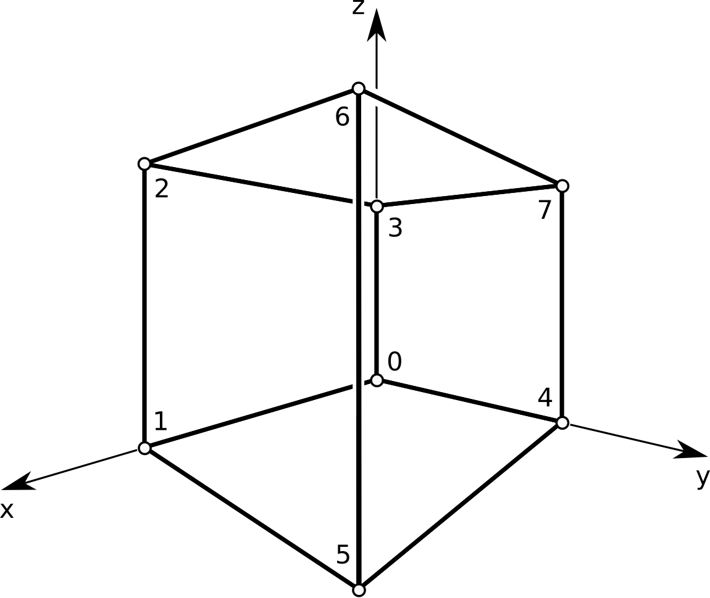

Quickstart
The main purpose of this package is mesh processing. Surfaces are described by a finite number of vertices and faces as explained here. Put the m3sh package folder into a location that is searched by Python or augment the search path in your Python scripts before importing any m3sh modules:
import os
import sys
sys.path.insert(0, os.path.abspath( <relative_path_to_m3sh_package_folder> ))
Building a cube
{kind=link}
We build a Mesh instance that holds the geometry of the unit cube
\([0, 1]^3\) by specifying its vertex coordinates and how those vertices
are connected to form the faces of the cube:
from m3sh.hds import Mesh
# The list of vertex coordinates. Their position in the list is
# important when defining faces. Any array_like representation
# can be used.
V = [[0., 0., 0.],
[1., 0., 0.],
[1., 0., 1.],
[0., 0., 1.],
[0., 1., 0.],
[1., 1., 0.],
[1., 1., 1.],
[0., 1., 1.]]
# List of combinatorial face definitions. Indices refer to
# rows of the vertex coordinate list V.
F = [[0, 1, 2, 3],
[1, 5, 6, 2],
[3, 2, 6, 7],
[7, 6, 5, 4],
[3, 7, 4, 0],
[0, 4, 5, 1]]
cube = Mesh(V, F)
During mesh construction, the list V is converted to an equivalent
ndarray object. The vertex coordinate array of cube can
be accessed via its points attribute. The list F becomes
redundant.
Incremental construction
The auxiliary data structures V and F are not needed for mesh construction. A mesh can be built by adding vertices and faces incrementally:
from m3sh.hds import Mesh
cube = Mesh()
# Add the vertices of a cube by specifying their (x,y,z) coordinates.
# We can use lists, tuples, or ndarrays of shape (3, ) for that. For
# convenience, a variable number of scalar arguments is also accepted.
cube.add_vertex([0., 0., 0.])
cube.add_vertex([1., 0., 0.])
cube.add_vertex((1., 0., 1.))
cube.add_vertex((0., 0., 1.))
cube.add_vertex(np.array([0., 1., 0.]))
cube.add_vertex(np.array([1., 1., 0.]))
cube.add_vertex(1., 1., 1.)
cube.add_vertex(0., 1., 1.)
# Add faces. A face is defined by an ordered sequence of vertex indices.
# Indices are assigned in the order vertices where added to the mesh.
cube.add_face([0, 1, 2, 3])
cube.add_face([1, 5, 6, 2])
cube.add_face((3, 2, 6, 7))
cube.add_face((7, 6, 5, 4))
cube.add_face(3, 7, 4, 0)
cube.add_face(0, 4, 5, 1)
Note
No matter what way of mesh construction is used, the faces of a mesh have to be oriented consistently as described here.
Reading and writing meshes
The Mesh class provides interface functions
read() and write() to read and
write meshes in OBJ format. Assuming the above definition of the cube, it
can be saved in OBJ format:
>>> cube.write('cube.obj')
Similarly, we can read a mesh from file:
>>> mesh = Mesh.read('cube.obj')
If vertex normals or texture coordinates are stored in an OBJ file, they can be recovered via
>>> mesh, vecs, uvs = Mesh.read('some-mesh.obj', 'vn', 'vt')
Visualization
The generated cube can be directly inspected using the vis
module (requires VTK):
import m3sh.vis as vis
vis.mesh(cube)
vis.show()
Note
The show() function is a blocking function. A script
will not advance beyond this function as long as the graphics window
is open.